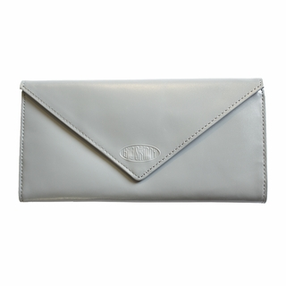

Leather Hybrid L Shaped Wallet

The Leather Hybrid L-Shaped Wallet is what happens when you cross a tri-fold and a bi-fold wallet. It flips open and up to provide additional storage space and options.
Hipster Bifold
Our handsome Hipster bi-fold wallet from Big Skinny has enough pockets to secure a load of plastic cards, receipts, cash and those old baseball cards with frayed edges. Yet, this wallet is five times lighter than a traditional wallet.
Leather Slimvelope Wallet

This Slimvelope is only .5 inch thick. Inside our tri-fold Slimvelope are two checkbook-sized billfolds, two clear plastic ID card pockets, and eight extra wide card pockets. Each holds three to five credit cards.
Mounte Cougar Tri-fold Checkbook Wallet
You will have easy access to all of it without the fear of anything slipping out - not with our exclusive no-slip grip pocket liners. Our wallet is only 7mm thin (or 3/8) inch) when closed. This gorgeous tri-fold in electric purple measures 7 1/2 inches by 4 3/16 inches.
World Bifold Wallet with Zippered Pocket

You will have easy access to all of it without the fear of anything slipping out - not with our exclusive no-slip grip pocket liners. Our wallet is only 7mm thin (or 3/8) inch) when closed. This gorgeous tri-fold in electric purple measures 7 1/2 inches by 4 3/16 inches.
Traveler Wallet
Our newest world's skinniest travel passport case and wallet in one from Big Skinny is the smart way to explore the planet. It's super thin and extra roomy to hold all your travel documents, cash and plastic cards.